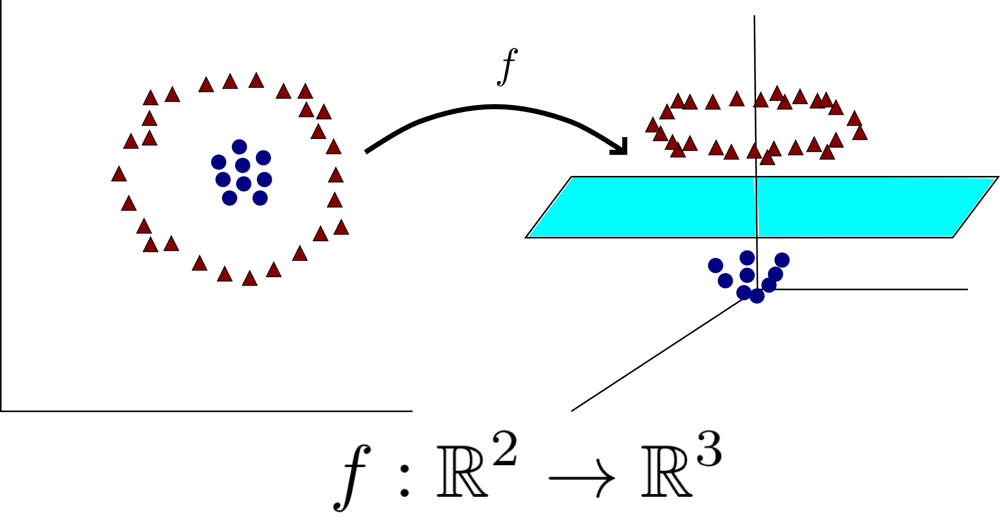

20. SVM: the kernel trick#
We saw in the previous chapter how support vector machines provide a robust way of separating data using hyperplanes. Sometimes, when data is not linearly separable, we can map them into higher-dimensional space, where they become separable.
{kind=link}

Fig. 20.1 Illustration of how a non-linearly separable dataset becomes separable when mapped into higher-dimensional space.#
We will now examine a powerful approach to improve support vector machine that is commonly called the kernel trick. As we will see, this approach involves a minimal modification of our previous SVM approach, but provides more complicated non-linear decision boundaries. The approach is also equivalent to mapping data into a higher-dimensional space, and performing the classification there.
Before we explain the kernel trick, we make a short digression into the concept of duality in convex optimization.
20.1. Digression: a brief introduction to duality in optimization#
Infimum and Supremum
In this section, we will use the notions of infimum (\(\inf\)) and supremum (\(\sup\)) of a set of real numbers. If you are not familiar with these notions, you can just think of \(\inf\) as \(\min\) and \(\sup\) as \(\max\).
The difference between \(\min\) and \(\inf\) is the following: in mathematics, when we say \(\min S = 0\), we mean that \(0 \in S\) and \(0\) is the smallest element of of the set \(S\). In contrast, consider the set \(S = \{1/n : n \geq 1\} = \{1,1/2,1/3,1/4, \dots\}\). Observe that \(S\) contains elements that are as close as we want to \(0\). However, \(0 \not\in S\). As a result, \(\min S\) is not defined as the set does not contain a minimal element. However, we say \(\inf S = 0\) since \(0\) is the best “lower bound” on \(S\) (i.e., it is the greatest lower bound). We define \(\sup\) similarly as the least upper bound of the set. See Wikipedia for more details.
Consider the following standard optimization problem, where a function needs to be minimized on some domain \(\mathcal{D} \subseteq \mathbb{R}^d\), under some inequality and some equality constraints:
We call this problem the primal problem and denote its optimal value by \(p^\star\), i.e., the minimal value of \(f_0\) on \(\mathcal{D}\) under the given inequality and equality constraints is \(p^\star\).
Consider the Lagrangian function \(L: \mathcal{D} \times \mathbb{R}^m \times \mathbb{R}^p \to \mathbb{R}\)
This may reminisce you of the method of Lagrange multipliers, which is related. We then define the Lagrange dual function \(g: \mathbb{R}^m \times \mathbb{R}^p \to \mathbb{R}\) by
We claim that for every \(\lambda \geq 0\) (i.e., \(\lambda_i \geq 0\) for all \(i\)), we have
Proof.
Assume \(\tilde{x}\) satisfies the constraints (i.e., \(f_i(\tilde{x}) \leq 0\) and \(h_i(\tilde{x}) = 0\)) and \(\lambda \geq 0\). Then
The result follows by optimizing over \(\tilde{x}\).
Since, for any \(\lambda \geq 0\), the function \(g(\lambda,\mu)\) provides a lower bound on the desired value \(p^*\) of our primal optimization problem, it is natural to optimize that function over \(\lambda \geq 0\) to get the best possible lower bound. This is called the dual problem associated to our primal problem:
Denote by \(d^\star\) the optimal value of the dual problem (i.e., the maximal value of \(g(\lambda, \nu)\) under the given constraints). Since \(g(\lambda, \nu) \leq p^\star\) for all \(\lambda \geq 0\), we immediately obtain
This above inequality is called weak duality. In other words, solving the dual problem always gives you a lower bound on the optimal value of the primal problem. What is interesting is that, while \(d^\star\) and \(p^\star\) are not always equal, they often are in practice. When \(d^\star = p^\star\), we say strong duality holds. In that case, one can solve the dual problem instead of the primal problem and still get the optimal value \(p^\star\). This is particularly interesting when the dual problem is easier to solve than the primal problem.
Many, additional assumptions that guarantee strong duality holds are known (see e.g., Slater’s constraint qualification).
20.2. Back to SVMs#
Recall the SVM optimization problem:
Let us derive the dual problem. The associated Lagrangian is
which we minimize with respect to \(\beta, \beta_0, \xi\). Setting the respective derivatives to \(0\), we obtain:
Substituting into \(L_P\), we obtain the Lagrange (dual) objective function:
The function \(L_D\) provides a lower bound on the original objective function at any feasible point (weak duality). In this particular case, one can show strong duality holds. The solution of the original SVM problem can then be obtained by maximizing \(L_D\) under the previous constraints.
20.3. Transforming data and the kernel trick#
Going back to our original motivation, suppose our data is not linearly separable and consider a transformation \(h: \mathbb{R}^p \to \mathbb{R}^m\), transforming our features into
After performing this transformation, the Lagrange dual function becomes:
Important observation: \(L_D\) only depends on \(\langle h(x_i), h(x_j)\rangle\), the inner product between \(h(x_i)\) and \(h(x_j)\).
In fact, we don’t even need to specify \(h\) to solve the optimization problem, we only need to know:
In mathematics, we often call such a function \(K(x,x')\) of two variables a kernel. The kernel trick for SVM involves specifying a kernel \(K\) and solving the above dual problem with that kernel. If you look at the scikit-learn documentation, the “kernel” argument is the kernel \(K\) above. As we will explain below, when the kernel is positive semidefinite, using a kernel is equivalent to mapping the data into a higher-dimensional space, and performing the usual SVM classification in that space. Doing so provides more flexibility to the SVM classifier and can yield an important increase in performance.
20.4. Positive definite kernels#
We saw above that if the features are mapped into higher-dimensional space using a transformation \(h(x_i) = (h_1(x_i), \dots, h_m(x_i))\), then solving the dual SVM problem is equivalent to introducing a kernel \(K(x_i, x_j) = \langle h(x_i), h(x_j)\rangle\) into the dual objective function. It is natural to ask if conversely, any kernel arises as
for some function \(h\). In other words, if we solve the dual SVM problem with an arbitrary kernel, is this process equivalent to mapping the data into a higher-dimensional space using a function \(h\), and then performing SVM in the high-dimensional space? One can show that this is the case precisely when the kernel \(K\) is positive definite. Recall the notion of a positive semidefinite matrix, as discuss in the Ridge regression section.
Definition (Positive semidefinite kernel)
A kernel \(K: \mathbb{R}^d \times \mathbb{R}^d \to \mathbb{R}\) is said to be positive semidefinite if for any \(n \geq 1\) and any \(x_1, \dots, x_n \in \mathbb{R}^d\), the matrix
is positive semidefinite.
First observe that if \(K(x,x') = \langle h(x), h(x')\rangle\) for some function \(h: \mathbb{R}^d \to \mathbb{R}^m\), then \(K\) is positive semidefinite. Indeed, in that case, let \(v_i = h(x_i) \in \mathbb{R}^m\) and let \(V\) be the matrix whose columns are \(v_1, v_2, \dots, v_n\). Then we have
and so that matrix is positive semidefinite for any choice of \(x_1, x_2, \dots, x_n \in \mathbb{R}^d\) and any \(n \geq 1\). Interestingly, there is a converse to that construction.
Theorem (Moore–Aronszajn)
Let \(\mathcal{X}\) be a set and let \(K: \mathcal{X} \times \mathcal{X} \to \mathbb{R}\) be a positive semidefinite kernel on \(\mathcal{X}\). Then there exists a Hilbert space \(\mathcal{H}\) and a map \(h: \mathcal{X} \to \mathcal{H}\) such that
In conclusion, positive semidefinite kernels arise from “taking the inner product” after mapping the data into a Hilbert space. It thus makes sense to use any positive semidefinite kernels in the SVM framework. As you can see in the scikit-learn documentation, several options are available for the kernel of the SVC object. Each kernel corresponds to mapping data in different spaces and can considerably improve the performance of the basic SVM classifier.